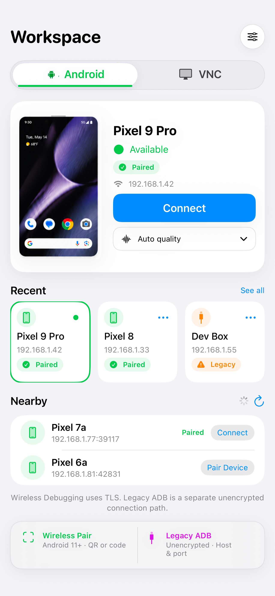
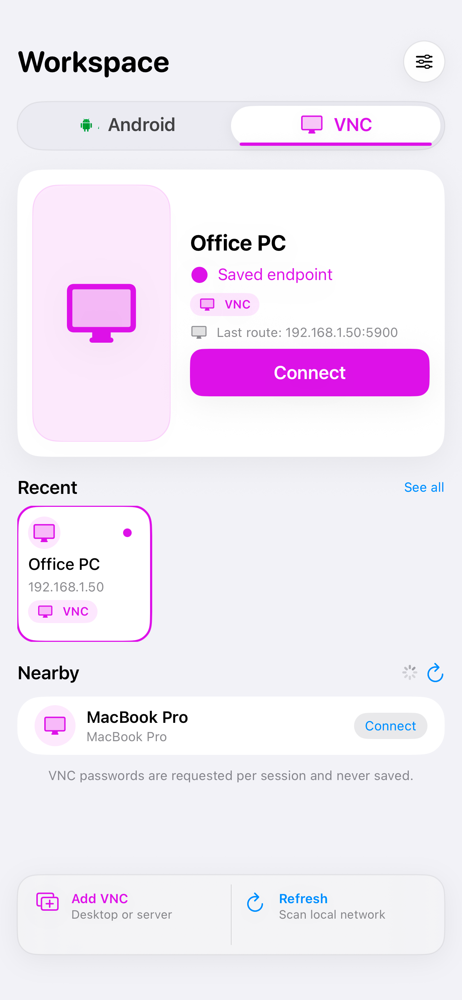
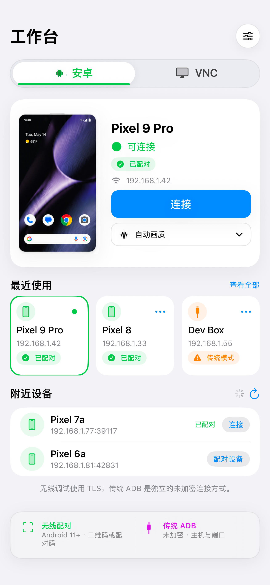
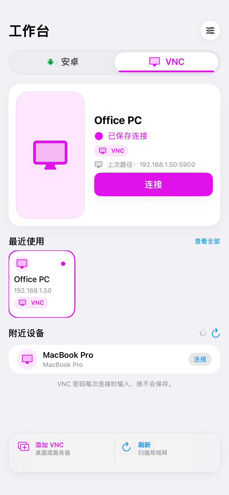

IPHONE + IPAD · ANDROID ADB + VNC
Your devices.
Within reach.
Connect from iPhone or iPad to Android devices with ADB, or to a computer running a VNC server. View and control them over a reachable network.
在 iPhone 或 iPad 上，通过 ADB 连接 Android 设备，或通过 VNC 连接已启用服务器的电脑，在可访问的网络中查看和控制远端画面。
Two ways to connect / 两种连接方式
Android via ADB
Pair using Android Wireless Debugging, or connect to an Android device already configured for ADB over TCP. Use touch, Android navigation, text input, explicit clipboard transfer and screenshots.
使用 Android 无线调试配对，或连接已配置 ADB TCP 的设备；支持触控、导航、文字输入、主动传递剪贴板内容和截图。
Desktop via VNC
Enter a reachable VNC server address and port to connect to a remote desktop. Use touch or trackpad controls, an external keyboard and explicit clipboard transfer. VNC passwords are requested for each session and are not saved.
输入可访问的 VNC 服务器地址和端口连接远程桌面；可使用触控、触控板、外接键盘和主动传递剪贴板内容。VNC 密码每次会话单独输入，不会保存。
Connection workspaces / 连接界面
Current iPhone screenshots show the Android and VNC connection workspaces. These are setup screens, not live remote sessions.
以下 iPhone 截图展示 Android 与 VNC 连接界面，并非正在进行的远程会话。




Direct connections / 直接连接
RemoteOrbit connects your Apple device directly to the Android device or VNC server you choose. It does not provide a cloud relay or account. Both endpoints must be reachable; remote access across the internet requires networking that you arrange and trust.
RemoteOrbit 在 Apple 设备与你选择的 Android 设备或 VNC 服务器之间直接连接，不提供云端中继，也不需要账号。两端必须能互相访问；跨互联网连接需要你自行配置并信任相应网络。
Requires iOS/iPadOS 17 or later. Android Wireless Debugging requires Android 11 or later. VNC requires a compatible server running on the destination computer.